End-to-end implementation of Harness CI/CD on a local Kubernetes cluster — from infrastructure bootstrap to templatized pipelines. Built, tested, and deployed hands-on.
Before diving into the technical details, here's the thinking behind the decisions I made.
| Lab Requirement | My Implementation |
|---|---|
| Set up a Kubernetes cluster | ✓ Colima with k3s (local, lightweight) |
| Sign up for Harness Free Trial | ✓ Account: thearcticmonkey7 |
| Install the Harness Delegate | ✓ Helm chart in harness-delegate-ng namespace |
| CI: Build an application from source | ✓ Python/FastAPI app (Mekari) from GitHub |
| CI: Run tests | ✓ pytest suite on Python 3.11 container |
| CI: Build and Push Docker image | ✓ leolibertine/mekari:latest on DockerHub |
| CD: Deploy to K8s with manifests | ✓ deployment.yaml + service.yaml in k8s/ |
| CD: Use canary release strategy | ✓ Canary → Delete → Rolling Deployment |
| Bonus: Templatize a step | ✓ Run Tests Template (v1, referenced in pipeline) |
A complete Harness CI/CD platform configured from scratch, demonstrating infrastructure setup, continuous integration, continuous deployment with canary strategy, and pipeline templatization.
Local Kubernetes cluster provisioned using Colima with k3s runtime. Lightweight, fast, and fully functional for development workloads.
Harness Delegate installed via Helm chart in a dedicated namespace. Acts as the bridge between the Harness SaaS platform and the local cluster.
Two-stage pipeline: CI runs tests and pushes a Docker image to DockerHub. CD deploys to Kubernetes using a canary release strategy.
Reusable step template created for test execution. Referenced directly in the pipeline, enabling standardization across future pipelines.
From source code to production deployment — every component connected through Harness.
Each exercise built on the previous one. Click any exercise to see what was involved.
Instead of using a cloud provider, I chose to run a local Kubernetes cluster using Colima with the k3s distribution. This provides a lightweight but fully-functional K8s environment that's ideal for development and testing.
The Delegate is the key component that connects the Harness SaaS platform to your local infrastructure. It runs as a pod inside the cluster and listens for instructions from Harness — pulling manifests, executing deployments, and reporting back status.
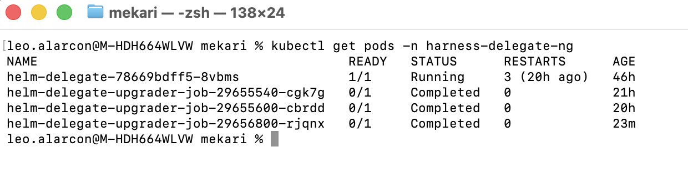
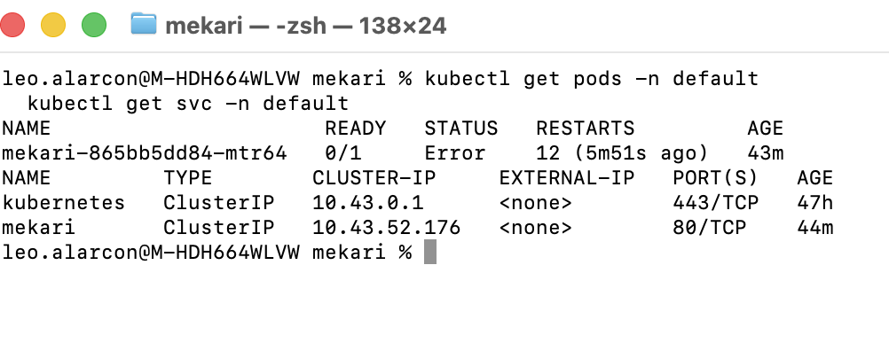
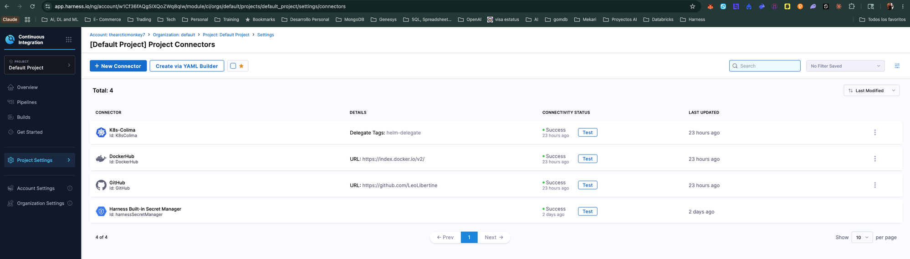
The CI stage automates the entire path from source code to a deployable artifact. Every push to main triggers the full sequence.
A Python FastAPI application from my personal GitHub repository. The CI pipeline installs dependencies, runs the test suite with pytest, and builds a Docker image.
Tests run using pytest on a Python 3.11 container inside the K8s cluster. Two test files were excluded from CI: one that requires a live MongoDB connection, and another with module-level initialization that conflicts with the test runner.
After tests pass, the pipeline builds a Docker image and pushes it to DockerHub as leolibertine/mekari:latest (228.9 MB). This artifact is then available for the CD stage.
sys.exit() at module level (which kills the test runner), and another that requires a live MongoDB connection. These are real-world tradeoffs — not every test belongs in a CI pipeline. Knowing what to include and what to defer is part of building a reliable pipeline.
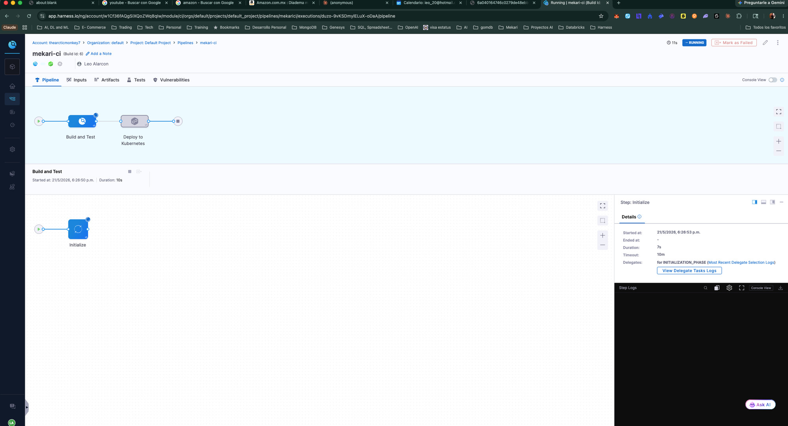
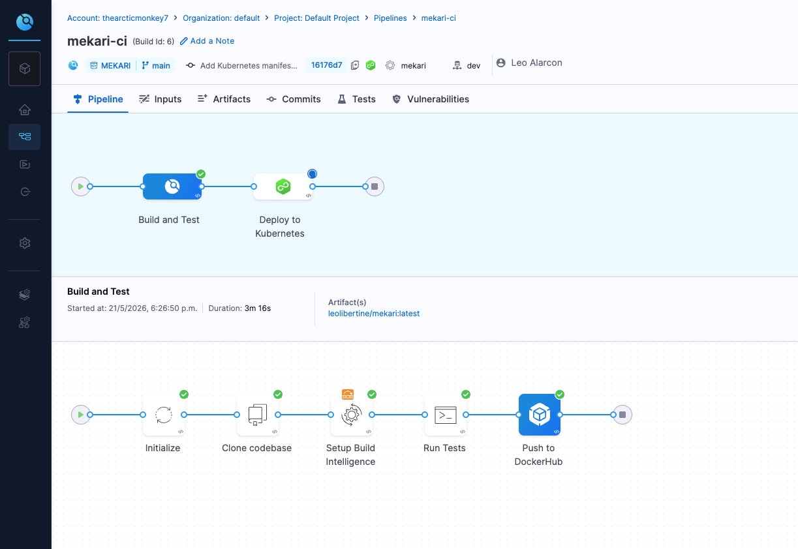
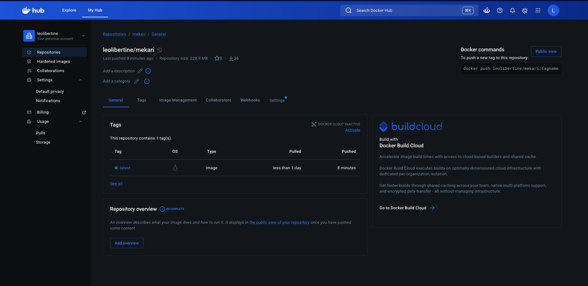
The CD stage takes the Docker image produced by CI and deploys it to the Kubernetes cluster using a canary release strategy.
Deploy a small subset of the new version. Only one pod is created to test viability before committing to a full rollout.
Once the canary is verified, the test pod is removed. This cleans up before the full deployment begins.
The new version is rolled out to all pods gradually. Traffic shifts incrementally, ensuring zero downtime.
Two manifest files were created and pushed to the GitHub repository. Harness fetches them automatically from the k8s/ directory on each deployment.
A ClusterIP service exposes the application on port 80 internally, routing traffic to the container's port 8000. The service, environment (dev, Pre-Production), and infrastructure (k8s-colima) were all configured in Harness.
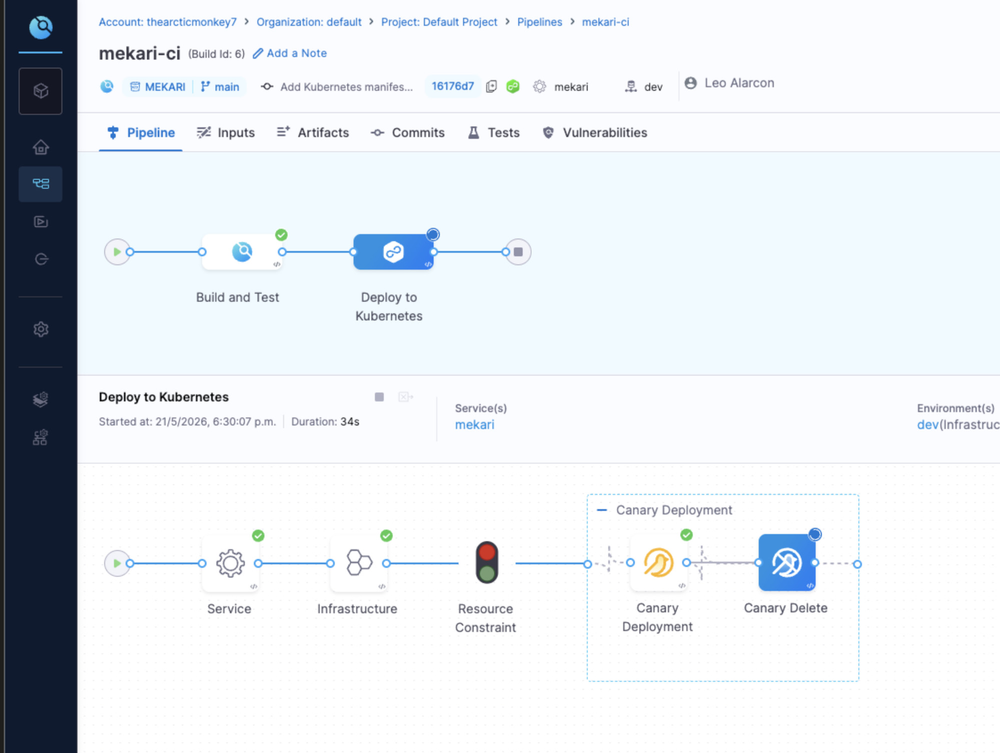
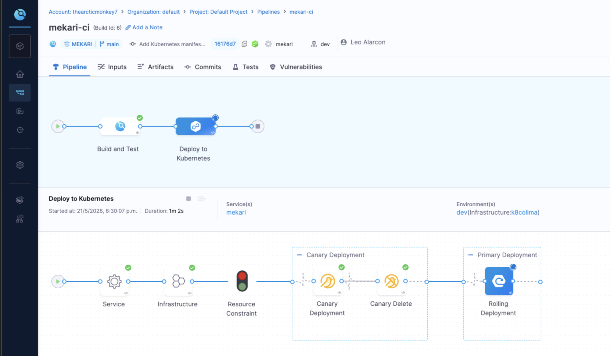
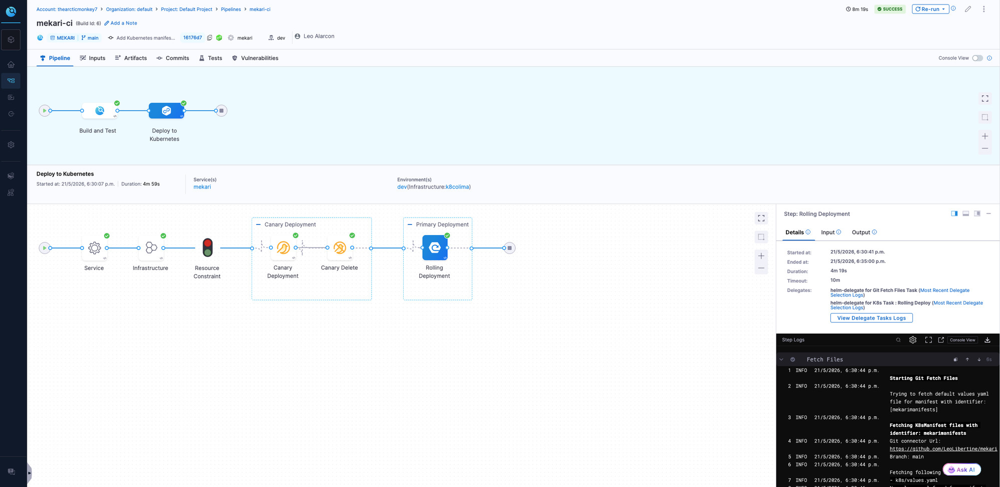
One of Harness's strongest value propositions: templatize once, reuse everywhere. Standardize engineering practices across teams.
Templates allow you to save a pipeline step as a reusable component. Instead of configuring the same step in every pipeline, you define it once as a template and reference it. Changes to the template propagate to all pipelines that use it.
I templatized the "Run Tests" step from the CI stage. It's stored at the project level (scope: Project) with version v1 STABLE. The pipeline now references this template instead of having the step configuration inline.
In an enterprise with hundreds of pipelines, templates ensure consistency. If a security team requires a specific testing configuration, they update the template once — every pipeline inherits the change. This is governance at scale.
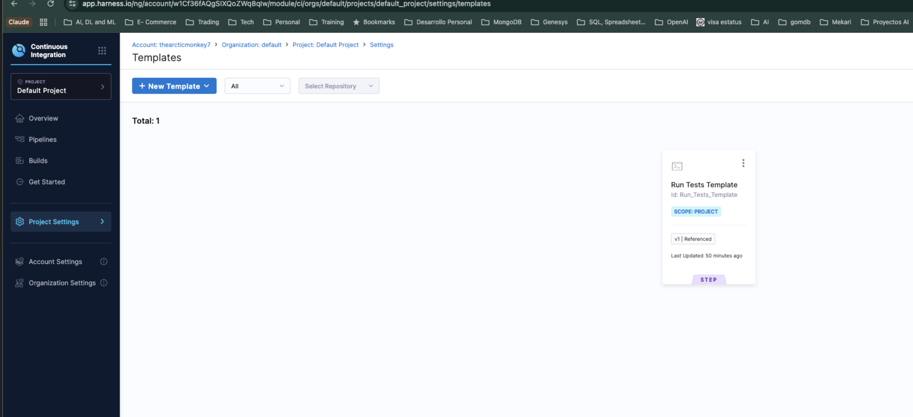
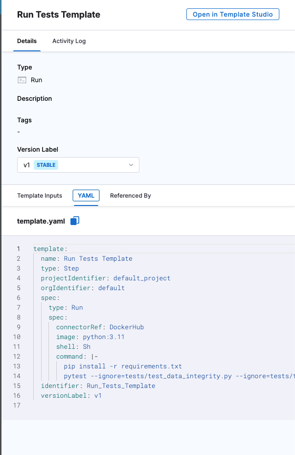
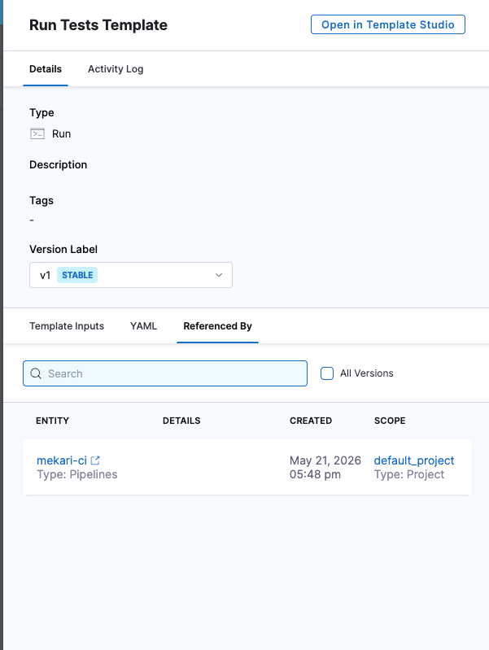
Click any image to expand. All screenshots taken during live pipeline execution on May 21, 2026.
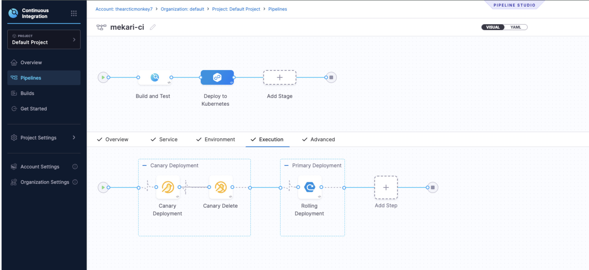
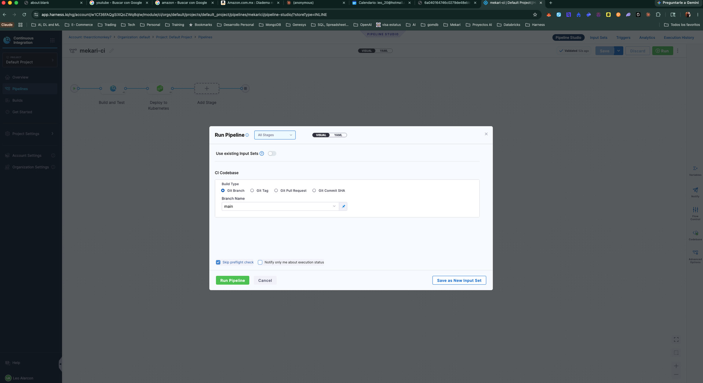
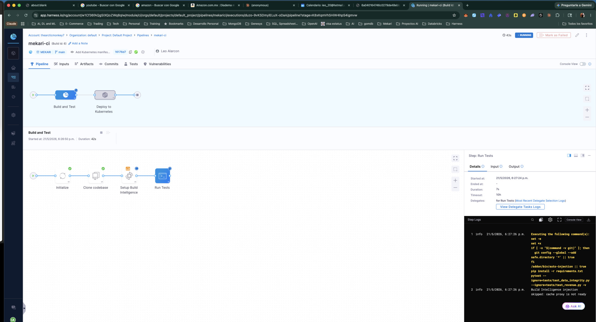
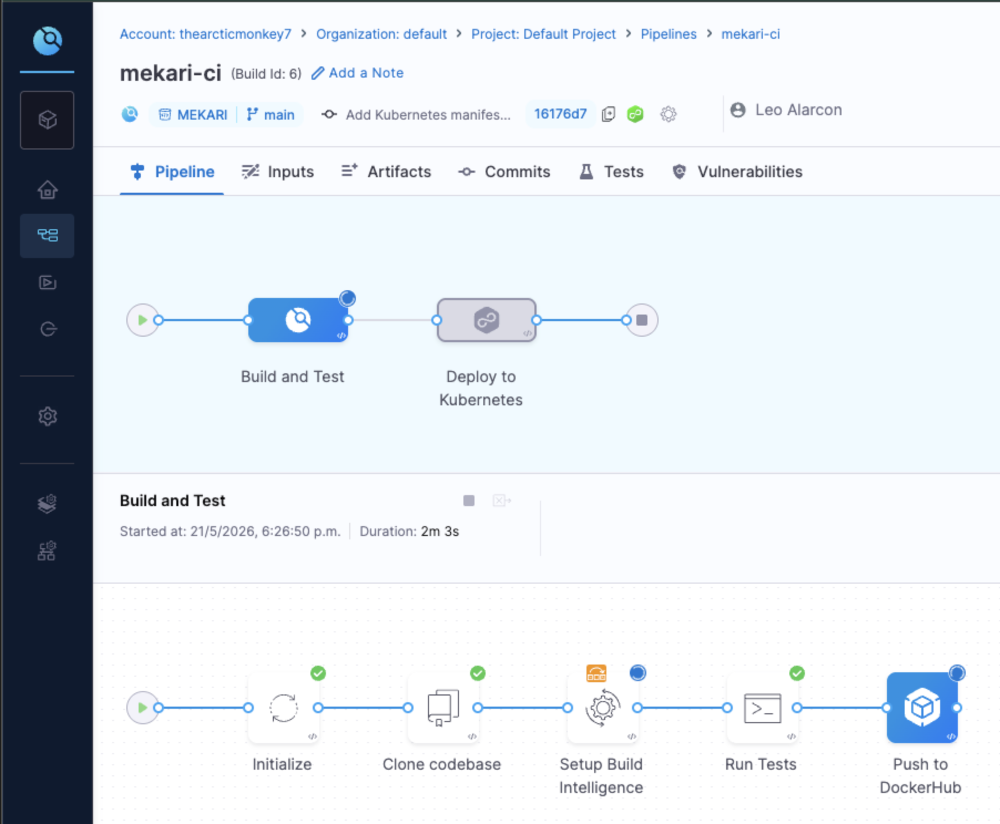
The Delegate model is elegant: a lightweight agent inside your infrastructure that receives instructions from the SaaS platform. No inbound firewall rules needed. This is how Harness achieves zero-trust connectivity across any environment.
Canary deploys give you a safety net: test with a small percentage of traffic before going all-in. Combined with Harness's rollback capabilities, this minimizes blast radius. For critical services, this is non-negotiable.
A single template change propagates to every pipeline that references it. For enterprises managing hundreds of services, this is how you enforce security policies, testing standards, and deployment best practices without slowing teams down.
Harness's Build Intelligence optimizes CI by intelligently selecting which tests to run. In large codebases, this can dramatically reduce build times while maintaining confidence in code quality.